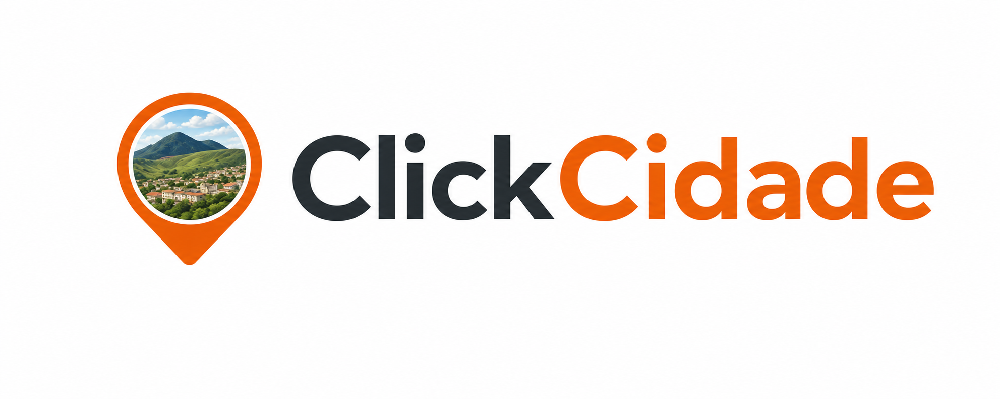

Toque em Usar GPS e permita o acesso à localização do aparelho.
A referência ajuda a equipe, mas não substitui a localização por GPS.
A foto, a localização e a referência são usadas para identificar o ponto informado e organizar o atendimento. Evite fotografar pessoas, documentos, placas de veículos ou áreas internas de residências.
Denúncia recebida
Guarde este protocolo para acompanhar o atendimento.